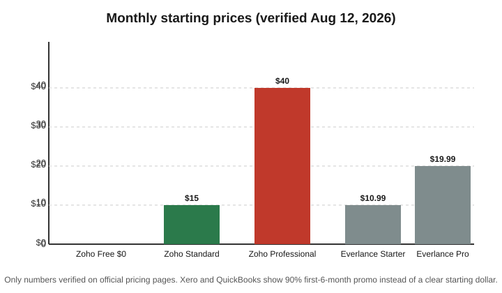

AI Tools for Accountants (2026): 8 Picks Compared
The short version
TL;DR: The best AI tools for accountants in 2026 are Zoho Books (free tier plus AI receipt scanning, $15/month Standard paid) and Everlance (free mileage tracking with an AI deduction finder, $10.99/month Starter). If you work in a larger firm, Xero and QuickBooks Online both run big first-year promos right now (90% off the first 6 months) and ship AI that categorizes transactions and reads invoices. Prices below were verified on each vendor's official pricing page on August 12, 2026.This roundup is for working accountants, bookkeepers, and tax preparers. I priced out the tools that actually save billable hours: document capture, reconciliation, categorization, and mileage. I skipped everything that costs big implementation effort unless it pays off fast. Every price in the comparison table came off a primary vendor page, not a reseller or review blog.
What is the best all-around AI accounting software?
Zoho Books is the strongest value if you want real AI features without a big monthly bill. The free plan covers one user plus one accountant and includes receipt autoscans, invoicing, bank reconciliation, and 1099 contractor tracking. It stays free as long as your annual revenue stays under $50,000 and you invoice fewer than 1,000 times a year, per the official pricing page. That is a genuinely usable free tier, not a trial.
The paid Standard plan is $15 per organization per month and adds bank feeds, sales tax tracking, and e-filing 1099s. The AI is the receipt autoscan feature, which reads and categorizes scanned receipts. Free and trial users get 50 scans per month, Standard and Professional get 200, and Premium ($60/month) and above get 1,000, per the official page. If you process a stack of receipts weekly, the $60 tier is where the scanning quota stops being a limit.
Which AI tool is best for mileage and deductions?
Everlance is the focused pick for accountants and their clients who drive for work. It automatically detects trips (30 per month on the free plan, unlimited on paid), tracks expenses with receipt uploads, and its AI deduction finder flags write-offs you might miss. Starter is $10.99 per month or $89.99 a year; Professional is $19.99 per month or $119.99 a year, per the official pricing page. The free plan needs no credit card.
Everlance says its users save about $7,500 a year on average in tax deductions. That is a vendor marketing figure, so treat it as directional, not a guarantee. What is verifiable is the price and the feature list. If you prepare taxes for more than a handful of clients, having clients on a tool with IRS-compliant mileage logs beats chasing them for a paper logbook every March.
What about the big platforms: Xero and QuickBooks?
Xero and QuickBooks Online are the two platforms most accounting firms already run. Both now use AI to suggest-categorize transactions, match bank lines, and read incoming invoices, and both are running steep first-year promotions in the US right now.
Xero's US pricing page lists three plans (Early, Growing, Established) and offers new US customers 90% off for the first six months with code DC90626308US. QuickBooks Online is offering 90% off with a promotion ending August 27, 2026, per its official page. Exact plan prices are set by your region and billing term, so check the pricing page rather than trusting a number I give you here; both vendors change prices and promos regularly.
When to pick Xero: your firm runs on it already, you need a separate accountant seat, or you want its invoice and payment features. When to pick QuickBooks: you are in the US, you file 1099s in volume, or your clients expect QuickBooks files. Cost: 90% off the base plan for the first six months with either, then their standard rates apply.
How do the prices compare?
The table below lists only starting prices I could verify on official pricing pages. Xero and QuickBooks exact plan dollars I left out because they bend on promo and region; the 90% promos are confirmed on their own pages.
| Tool | Free tier | Paid (monthly, official page) | Key AI feature |
|---|---|---|---|
| Zoho Books | Yes (1 user + 1 accountant) | $15 Standard; $40 Professional; $60 Premium | Receipt autoscan and categorization (50-1,000 scans/mo by plan) |
| Everlance | Yes (30 auto trips/mo) | $10.99 Starter; $19.99 Professional | AI deduction finder, auto mileage + expenses |
| Xero | Trial | 90% off first 6 months (US); Early/Growing/Established | AI categorization, invoice reading |
| QuickBooks Online | Trial | 90% off, promo ends Aug 27, 2026 | AI categorization, receipt capture |

How do you choose without wasting money?
Start free and let the tool prove itself on your real work. Sign up for Zoho Books free and Everlance free, then run a month of actual client data through both. Watch where receipts and categorization break down, because that is what you are paying for. If the free receipt-scan quota (50 scans a month on Zoho) is not enough, upgrade to the paid tier that clears your volume rather than the top plan.
If your firm is already standardized on Xero or QuickBooks, do not jump platforms just for AI; the AI improves within each product, and switching costs more than the monthly fee saves. The better move is to test the free or discounted tier of the new platform in parallel for one month before committing.
Recap checklist
- Start free: Zoho Books (free plan) or Everlance (free plan) for a month with real client data.
- Match the receipt-scan quota to your volume before paying: 50/mo free, 200/mo at Standard, 1,000/mo at Premium on Zoho.
- If you drive or track client miles, add Everlance paid ($10.99 or $19.99/mo) for unlimited auto-detection and the AI deduction finder.
- If your firm runs Xero or QuickBooks, stay put and use their AI features; both offer 90% off the first 6 months if you are a new US customer.
- Verify current prices on the vendor page before you buy; promotions change and are region-specific.
FAQ
Is there a genuinely free AI accounting tool?
Yes. Zoho Books has a real free plan (one user plus one accountant, up to $50,000 annual revenue and 1,000 invoices a year) that includes AI receipt autoscans. Everlance also has a free plan with 30 automatically detected trips per month and no credit card required.
How much does receipt scanning cost?
It depends on the tool and quota. On Zoho Books, receipt autoscans are included: 50 per month on the free plan, 200 per month on Standard and Professional, and 1,000 per month on Premium and above. If you want extra scans beyond your plan, Zoho sells a document-autoscans add-on around $8 to $10 per 50 scans a month.
Does the AI really categorize transactions accurately?
It does the heavy lifting, but you should spot-check the first few categories it suggests per account. The AI learns from your corrections, so accuracy improves over time. Treat the suggestion as a first pass, not a final posting without review.
Can these tools help with 1099 contractor and mileage tracking?
Yes. Zoho Books handles 1099 contractor tracking and filing on paid plans, and Everlance generates IRS-compliant mileage logs automatically. Both cut work that is tedious and audit-sensitive.
Should an accounting firm buy a separate AI assistant too?
Possibly, for writing and research. The accounting-specific tools here handle bookkeeping, scanning, and mileage. A general assistant such as ChatGPT or Gemini is useful for drafting client emails and summarizing tax guidance, but it is not a substitute for the bookkeeping tool.
Sources
Prices and features verified on the following official pages, retrieved August 12, 2026: Zoho Books pricing, Everlance pricing, Xero US pricing, and QuickBooks Online.